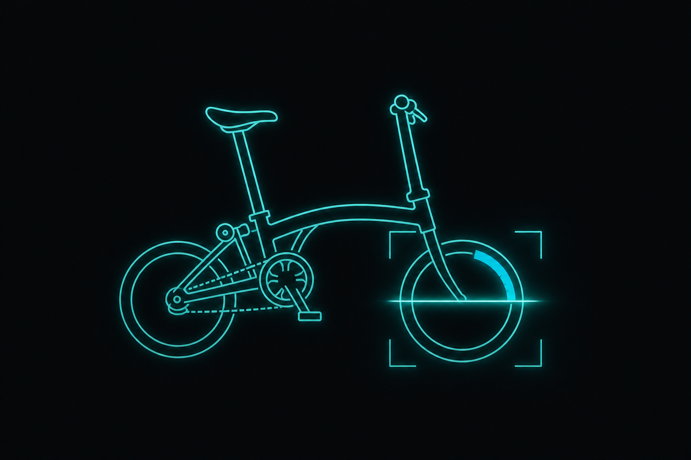

Computer Vision for Bike Wear Assessment
AI/ML Engineering Internship at Brompton Bicycle, London. I am building a computer vision system to assess bike component wear from images, intended for integration into Brompton's product ecosystem. The system combines image quality checks, multi-class wear classification, and confidence-calibrated decision logic to produce actionable, liability-aware maintenance recommendations.

Problem
Manual inspection of bike components is inconsistent and hard to scale. The goal was a vision-based system that could classify tyre wear into three actionable categories, Good, Monitor, or Replace, with high reliability on the safety-critical Replace class.
Approach
- Dataset acquisition was the highest-impact decision across the project. The training set grew from 321 to 817 images, with the Replace class expanding 6.5x through structured real-world data collection.
- A second classifier was built to identify tyre type, Slick, Lite, or Heavy, enabling personalised service recommendations rather than generic outputs.
- The evaluation framework was redesigned around Replace recall rather than overall accuracy after an initial model achieved 91% accuracy but caught only 1 in 8 unsafe tyres.
Results
- The final system uses a confidence-calibrated decision pipeline with tuned classification thresholds, designed to prioritise safety over headline accuracy.
- The inference pipeline is modular, integrating image quality checks, multi-model inference, and recommendation logic, and is designed for extension to additional components and integration into app-based workflows.
Tech stack
Python, computer vision, multi-class classification, confidence calibration, modular inference pipeline design.